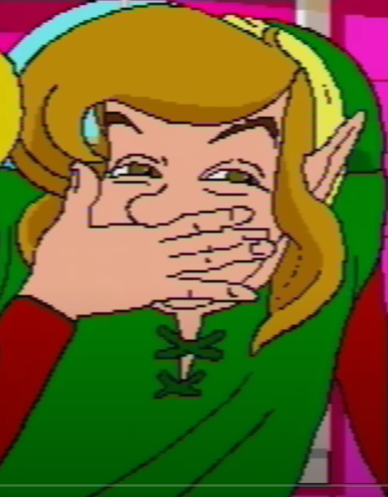

About Me
This is my website. You can find finished and work in progress papers as well as my artistic productions.
Research & Publications
- The depoliticisation of Far Cry 5 - Play/Write Student Journal Volume 3, pages 21-28 (2023). Download here.
Seminar Papers
- Unnatural Avatars: A case Study of Inside - Posthuman and AI narratives. Julia Hoydis. (2024). Download here.
- The Role of Dune in Popular Culture - Themes in Literature and Culture Studies: Frank Herbert’s Duniverse. René Schallegger (2024). Download here.
- Tragedy in Video Games: A Case Study of Bioshock Infinite, Inside and Red Dead Redemption 2 Representation and Configuration. Leonardo Marcato (2023). Download here.
Teaching & Workshops Experiences
- KCGL - Klagenfurt Critical Game Lab. An introduction to the basics of the academic practices of the Game studies and engineering master.
- Twine Game for writers An easy workshop to make a twine game without coding knowledge.
Portfolio
Conferences
- FROG 2024 Conference Abstract
- VGC 2024 Conference Abstract
Links
Contact
Feel free to reach out to me via email: elchraibi@edu.aau.at